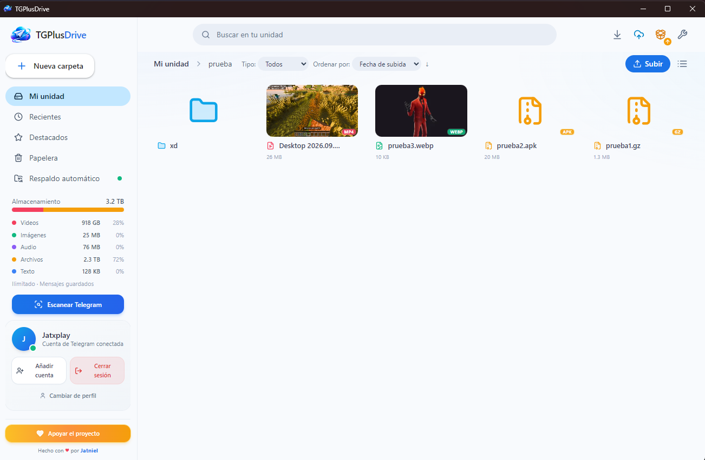

¿Por qué TGPlusDrive?
Lo mejor de un cliente de Telegram y de una nube, en una sola app.
Espacio ilimitado sin coste
Usa los Mensajes guardados de tu propia cuenta. Sin cuotas artificiales ni servidores intermedios.
Privacidad por diseño
Sin anuncios ni analítica. La sesión se cifra con DPAPI y solo se descifra en tu usuario de Windows.
Archivos gigantes de verdad
Divide automáticamente por encima del límite de Telegram y reanuda partes. Incluye herramienta offline para recomponerlos.
Respaldo automático
Espeja una carpeta de tu PC a Telegram, detecta renombres por hash, se pausa, se cancela y se restaura con toda la estructura.
Reproductor profesional
mpv en ventana propia con seek instantáneo gracias a un servidor local con soporte Range.
Búsqueda inteligente
Encuentra «Currículum» escribiendo curriculum y «Presupuesto2026» con presupuesto 2026.
Integridad y duplicados
SHA-256 al subir y al bajar. Aviso de duplicados con Sustituir o Subir copia.
Multiperfil y QR
Hasta 4 cuentas de Telegram, inicio de sesión por teléfono o QR, temas claro y oscuro.
Cómo empezar en 3 pasos
Necesitas una cuenta de Telegram y tus credenciales de API (gratis).
Descarga e instala
Baja el instalador desde GitHub Releases y ejecútalo. También hay versión portable.
Conecta Telegram
Introduce tu api_id y api_hash de my.telegram.org e inicia sesión con teléfono o QR.
Sube y respalda
Arrastra archivos o activa el respaldo automático de una carpeta de tu PC.
Preguntas frecuentes
¿Es realmente gratis e ilimitado?
Sí. TGPlusDrive no tiene servidores propios: usa el almacenamiento de tu cuenta de Telegram. El único límite es el tamaño por archivo de Telegram (2 GB, o 4 GB con Premium), que la app resuelve dividiendo el archivo.
¿Mis archivos están cifrados?
Viajan y se guardan cifrados en los servidores de Telegram, pero Telegram puede acceder a ellos. La sesión local sí está cifrada con DPAPI. El cifrado de extremo a extremo no está implementado.
¿Funciona sin Telegram Premium?
Sí. Con la cuenta gratuita el límite por archivo es de 2 GB; la app lo divide automáticamente.
¿Puedo borrar la app sin perder mis archivos?
Sí. Los archivos viven en tus Mensajes guardados de Telegram. Al reinstalar y volver a iniciar sesión, el índice se restaura.
¿Por qué Windows avisa al instalar?
Porque el ejecutable todavía no tiene firma de código. Es un aviso de SmartScreen, no un virus. Puedes compilarlo tú mismo desde el código fuente o verificar el hash del release.